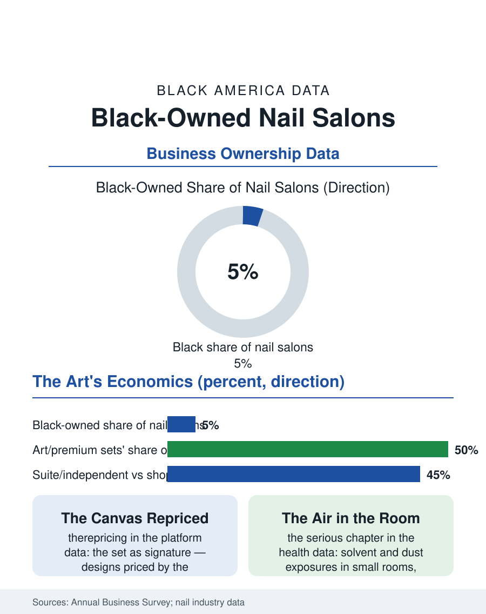

Black Business
The Smallest Canvas: Black-Owned Nail Salons
A commodity trade repriced by artistry: the Black nail technician's signature sets command the premium tier from a rented suite. The nail file.

The nail salon is the personal care economy's most immigrant-defined trade, and the Black-owned salon, long a small tier within it, has grown on the nail art economy's cultural turn, the Black nail technician as artist building the book on the designs the platforms made famous. The business census folds the trade into the personal care categories in the thousands of establishments. This article reads the nail file.
The Trade's Structure
The industry's modern form was built by the Vietnamese refugee community's remarkable occupational concentration, the training pipeline from the first generation's cosmetology schools creating a workforce that made the affordable manicure the American standard, a history the file records with the respect due a fellow small business epic, and within whose price structure the whole trade, including its Black tier, operates. The Black-owned salon's historical tier is the full-service beauty establishment's nail desk and the independent technician's suite, and its current growth rides the service's cultural elevation: the nail as canvas, the sculpted and painted sets whose photographs are the social platforms' beauty currency, priced per the hour of the artistry rather than the commodity manicure's clock, so that the Black technician's book, built on the design portfolio the platform displays, commands the trade's premium tier in the pattern of the barber's book, with the suite model, the rented room in the salon suite building, as the ownership ladder's first rung in the chair file's economics exactly. The training economy sits above the salon in the file's modern stack: the master technician's classes, in person and on the platforms, sell the technique itself to the trade's next cohort at the workshop's tuition, a revenue line whose margins the service's hours never offered, and whose leading sellers are, in the current directories, disproportionately the Black artists whose designs the platforms made the curriculum. The class is the book's final form, the clientele become the students, the signature become the syllabus, in the pattern by which every craft in this section eventually monetizes its mastery twice.
Chemicals, Wages, and the License
The occupational health file is the trade's serious chapter: the salon's chemical exposures, the solvents and the acrylic dusts, borne by a workforce of women of childbearing age in rooms whose ventilation the state rules govern unevenly, with the healthy salon programs, the product standards and the ventilation retrofits that the advocacy coalitions won in the leading states, constituting the file's policy record, the Black technician's exposure running through the same small rooms as every other's. The wage file beneath the ownership tier is the trade's contested ground, the commission and booth structures and the tip economy producing the labor standards cases the worker centers brought in the industry's metros, the technician's classification being the janitorial file's question in miniature. The license's hours and the states' reciprocity govern the workforce's mobility as in the other care trades, with the specialty's growth outpacing the licensing categories' revision in the pattern of the braiders' file.
The Set as a Signature
The nail file closes on the art form's economics: the set is a signature, the technician's designs worn as the client's public style for the weeks between appointments, a walking portfolio whose advertising value the platform then compounds, so that the Black nail artist's business is the culture's visual production at the body's smallest canvas, its economics finally rewarding the artistry the commodity structure priced at the clock's rate. The trade's forward file is the product's: the Black-owned polish and care brands of the beauty file's shelf, the salon's retail wall as their first channel, and the press-on economy, the designed set shipped to the customer who applies it at home, which the leading technicians have converted from a threat into their scalable product, the design divorced from the hour at last. The census counts the salons in the personal care totals, the Black-owned tier's growth visible mainly in the trade's own directories and the platforms' geography. The file's last entry is the appointment book's: three weeks out for the good sets, the suite's door with the artist's name in the lettering she chose, in a trade she entered at the commodity's price and is repricing, one hand at a time, at the art's.
More in Black Business
Black-Owned Businesses: Counts, Receipts, and the Representation Gap
About 161,000 Black-owned employer firms and three million solo ventures: how the Census Bureau counts Black business ownership, where firms concentrate, and the gap between population share and business share.
Black Median Net Worth: The Wealth Gap in Federal Reserve Data
The Federal Reserve puts Black median family net worth at $44,900, against $285,000 for White families — about 16 cents on the dollar. The widest gap in economic data.
Black Buying Power: The $1.8 Trillion Consumer Economy
Black buying power is estimated at about $1.8 trillion — larger than the economy of most nations. What the figure measures, who produces it, and what it buys.
Source: U.S. Census Bureau, Annual Business Survey for nail salons; nail industry workforce and healthy salon program data.